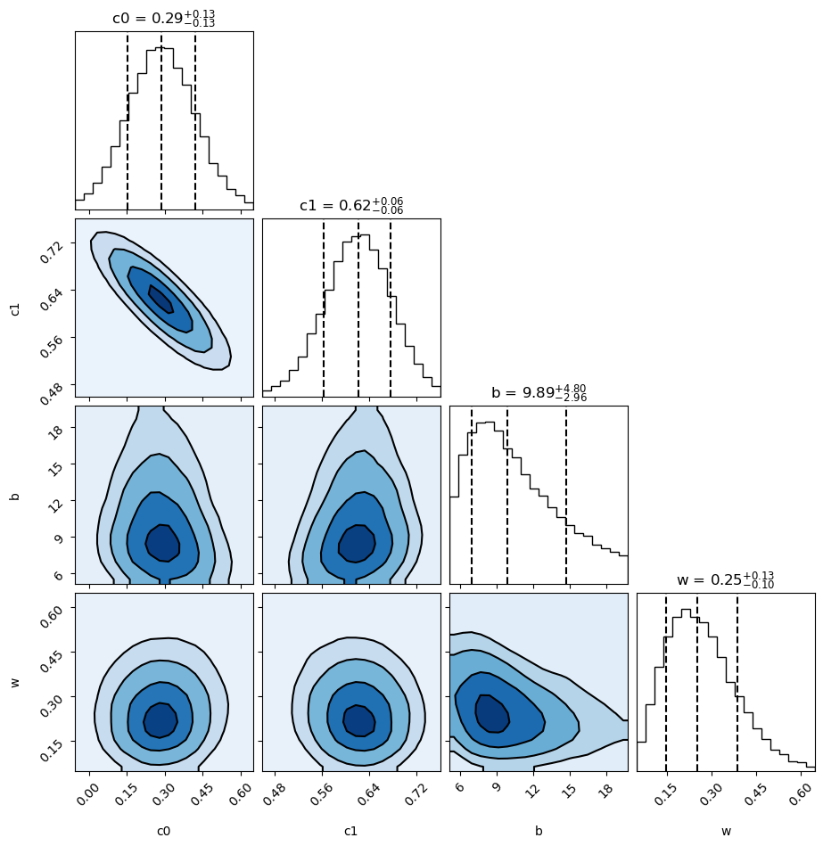

Case Study: Bayesian Curve Fitting¶
In this case study, we use vegas to fit a straight line
to data with with outliers. We use the specialized
integrator PDFIntegrator with a non-Gaussian
probability density function (PDF) in a Bayesian
analysis. We look at two examples,
one with 4 parameters
and the other with 22 parameters.
This case study is adapted from an example by Jake Vanderplas
on his Python blog.
It is also discussed in the documentation for the lsqfit module.
The Problem¶
We want to extrapolate the y values in the following figure to x=0:

A linear least-squares fit to the data (dotted line) is unconvincing; in particular,
the extrapolated value at x=0 is larger than one while most of the data
near x=0 suggest an intercept less than 0.5. The problem, of course, is
caused by the outliers. There are at least three outliers.
A Solution¶
There are many ad hoc prescriptions for handling outliers. In the best of situations one has an explanation for the outliers and can model them accordingly. For example, we might know that some fraction of the time our device malfunctions, resulting in much larger measurement errors than usual. This can be modeled in a Bayesian analysis by describing the data using a linear combination of two Gaussian probability density functions (PDFs) for each data point. One is the usual PDF proportional to , where the fit function is . The second is the same but with the for some . The relative weights assigned to these two terms are and , respectively.
The following code does a Bayesian fit with this modified PDF:
import numpy as np
import gvar as gv
import vegas
def main():
# 1) create data
x = np.array([
0.2, 0.4, 0.6, 0.8, 1.,
1.2, 1.4, 1.6, 1.8, 2.,
2.2, 2.4, 2.6, 2.8, 3.,
3.2, 3.4, 3.6, 3.8
])
y = gv.gvar([
'0.38(20)', '2.89(20)', '0.85(20)', '0.59(20)', '2.88(20)',
'1.44(20)', '0.73(20)', '1.23(20)', '1.68(20)', '1.36(20)',
'1.51(20)', '1.73(20)', '2.16(20)', '1.85(20)', '2.00(20)',
'2.11(20)', '2.75(20)', '0.86(20)', '2.73(20)'
])
# 2) create prior and modified PDF
prior = make_prior()
mod_pdf = ModifiedPDF(data=(x, y), fitfcn=fitfcn, prior=prior)
# 3) create integrator and adapt it to the modified PDF
expval = vegas.PDFIntegrator(prior, pdf=mod_pdf)
nitn = 10
nstrat = [10, 10, 2, 2]
warmup = expval(nstrat=nstrat, nitn=2*nitn)
# 4) evaluate statistics for g(p)
@vegas.rbatchintegrand
def g(p):
return {k:p[k] for k in ['c', 'b', 'w']}
results = expval.stats(g, nitn=nitn)
print(results.summary())
# 5) print out results
print('Bayesian fit results:')
for k in results:
print(f' {k} = {results[k]}')
if k == 'c':
# correlation matrix for c
print(
' corr_c =',
np.array2string(gv.evalcorr(results['c']), prefix=10 * ' ', precision=3),
)
# Bayes Factor
print('\n logBF =', np.log(results.pdfnorm))
def fitfcn(x, p):
c = p['c']
return c[0] + c[1] * x
def make_prior(w_shape=()):
prior = gv.BufferDict()
prior['c'] = gv.gvar(['0(5)', '0(5)'])
# uniform distributions for w and b
prior['gw(w)'] = gv.BufferDict.uniform('gw', 0., 1., shape=w_shape)
prior['gb(b)'] = gv.BufferDict.uniform('gb', 5., 20.)
return prior
@vegas.rbatchintegrand
class ModifiedPDF:
""" Modified PDF to account for measurement failure. """
def __init__(self, data, fitfcn, prior):
x, y = data
self.fitfcn = fitfcn
self.prior_pdf = gv.PDF(prior, mode='rbatch')
# add rbatch index
self.x = x[:, None]
self.ymean = gv.mean(y)[:, None]
self.yvar = gv.var(y)[:, None]
def __call__(self, p):
w = p['w']
b = p['b']
# modified PDF for data
fxp = self.fitfcn(self.x, p)
chi2 = (self.ymean - fxp) ** 2 / self.yvar
norm = np.sqrt(2 * np.pi * self.yvar)
y_pdf = np.exp(-chi2 / 2) / norm
yb_pdf = np.exp(-chi2 / (2 * b**2)) / (b * norm)
# product over PDFs for each y[i]
data_pdf = np.prod((1 - w) * y_pdf + w * yb_pdf, axis=0)
# multiply by prior PDF
return data_pdf * self.prior_pdf(p)
if __name__ == '__main__':
main()
Here class ModifiedPDF implements the modified PDF. The parameters for
this distribution are the fit function coefficients c = p['c'], the
weight w = p['w'], and a breadth parameter p['b']. As usual the PDF for
the parameters (in __call__) is the product of a PDF for the data times a
PDF for the priors. The data PDF consists of the two Gaussian distributions
for each data point:
one, y_pdf, with the
nominal data errors and weight (1-w), and the other, yb_pdf,
with errors that are p['b']
times larger and weight w. The PDF for the prior is implemented
using gvar.PDF from the gvar module.
We want broad Gaussian priors for the fit function coefficients, but
uniform priors for the weight parameter () and breadth
parameter (). An easy way to implement the uniform
priors for use by vegas.PDFIntegrator is to replace the weight
and breadth parameters by new parameters p['gw(w)'] and p['gb(b)'],
respectively, that map the uniform distributions onto Gaussian
distributions (0 ± 1). Values for the weight p['w'] and breadth
p['b'] are then obtained from the new variables using the inverse map.
This strategy is easily implemented using a gvar.BufferDict
dictionary to describe the parameter prior.
The parameter priors are specified in make_prior() which returns the
BufferDict dictionary, with a Gaussian random variable
(a gvar.GVar) for each parameter.
The fit function coefficients
(prior['c']) have broad priors: 0 ± 5. The prior for
parameter p['gw(w)'] is specified by
prior['gw(w)'] = gv.BufferDict.uniform('gw', 0., 1.)
which assigns it a Gaussian prior (0 ± 1) while also instructing
any BufferDict dictionary p that includes a value for
p['gw(w)'] to automatically generate the corresponding value for the
weight p['w']. This makes the weight parameter
available automatically even though vegas.PDFIntegrator
integrates over p['gw(w)']. The same strategy is used
for the breadth parameter.
The Bayesian integrals are estimated using vegas.PDFIntegrator
expval, which is created from the prior and the modified PDF.
It is used to evaluate expectation values of arbitrary functions of the
fit variables. Here it optimizes the integration variables for integrals
of the prior’s PDF, but replaces that PDF with the modified PDF when
evaluating expectation values.
We first call expval with no function, to allow the integrator to adapt
to the modified PDF. We specify the number of stratifications for
each direction in parameter space, concentrating
stratifications in the
c[0] and c[1] directions (because we expect more structure there);
expval uses about 3000 integrand evaluations per iteration with
this stratification.
We next use the integrator’s PDFIntegrator.stats()
method to evaluate the expectation values, standard deviations and
correlations of
the functions of the fit parameters returned by g(p).
The output dictionary results
contains fit results (gvar.GVars) for each of the fit parameters.
Note that g(p) and mod_pdf(p) are both batch integrands, with the
batch index on the right (i.e., the last index). This significantly
reduces the time required for the integrations.
The results from this code are as follows:
itn integral average chi2/dof Q
-------------------------------------------------------
1 4.486(46)e-11 4.486(46)e-11 0.00 1.00
2 4.549(47)e-11 4.518(33)e-11 0.97 0.44
3 4.562(48)e-11 4.532(27)e-11 0.80 0.65
4 4.499(46)e-11 4.524(23)e-11 0.89 0.59
5 4.549(45)e-11 4.529(21)e-11 0.95 0.53
6 4.530(45)e-11 4.529(19)e-11 0.89 0.64
7 4.498(47)e-11 4.525(17)e-11 0.77 0.84
8 4.423(48)e-11 4.512(16)e-11 0.81 0.81
9 4.573(50)e-11 4.519(16)e-11 0.84 0.78
10 4.439(45)e-11 4.511(15)e-11 0.90 0.67
Bayesian fit results:
c = [0.29(13) 0.619(57)]
corr_c = [[ 1. -0.894]
[-0.894 1. ]]
b = 10.6(3.6)
w = 0.27(12)
logBF = -23.8219(33)
The table shows results for the normalization of the
modified PDF from each of the nitn=10 iterations of the vegas
algorithm used to estimate the integrals. The logarithm of the normalization
(logBF) is -23.8. This is the logarithm of the Bayes Factor (or Evidence)
for the fit. It
is much larger than the value -117.5 obtained from a least-squares fit (i.e.,
from the script above but with w=0 in the PDF). This means that the
data much prefer the
modified prior (by a factor of exp(-23.8 + 117.4) or about 1041).
The new fit parameters are much more reasonable than the results from the least-squares fit. In particular the intercept is 0.29(14) which is much more plausible than the least-squares result (compare the dashed line in red with the dotted line):
{kind=link}
The analysis also gives us an estimate for the failure rate w=0.27(12)
of our devices — they fail about a quarter of the time — and
shows that the y errors are b=10.6(3.7) times larger when
there is a failure.
Note, from the correlation matrix, that the intercept and slope are
anti-correlated, as one might guess for this fit. We can illustrate this
correlation and look for others by sampling the distribution associated
with the modified PDF and using the samples to create histograms and
contour plots of the distributions. The following code uses
vegas.PDFIntegrator.sample() to sample the distribution, and
the corner Python module to make the plots (requires the
the corner and arviz Python modules, which are not included
in vegas):
import corner
import matplotlib.pyplot as plt
def make_cornerplots(expval):
# sample the distribution and repack with the variables we want to analyze
wgts, all_samples = expval.sample(nbatch=50_000)
samples = dict(
c0=all_samples['c'][0], c1=all_samples['c'][1],
b=all_samples['b'], w=all_samples['w']
)
# corner plots
fig = corner.corner(
data=samples, weights=wgts, range=4*[0.99],
show_titles=True, quantiles=[0.16, 0.5, 0.84],
plot_datapoints=False, fill_contours=True, smooth=1,
contourf_kwargs=dict(cmap='Blues', colors=None),
)
plt.show()
The plots are created from approximately 50,000 random samples all_samples, which
is a dictionary where: all_samples['c'][d,i] are samples for parameters c[d]
where index d=0,1 labels directions in c-space and index i
labels the sample; and all_samples['w'][i] and all_samples['b'][i]
are the corresponding samples for parameters w and b, respectively. The
corresponding weight for this sample is wgts[i].
The output shows histograms of the probability density for each parameter, and contour plots for each pair of parameters:
{kind=link}
From the plots, parameters c[0] and c[1] are reasonably Gaussian, with
a strong negative correlation, as expected. The other parameters are somewhat
skewed, but show only weak correlations. The contour
lines are at 0.5, 1, 1.5, and 2 sigma.
The histograms are labeled with the median values
of the parameters with plus/minus uncertainties that enclose 34% of the probability
on either side of the median (quantiles=[0.16, 0.5, 0.84]).
Finally, note that the Monte Carlo integrations can be made
twice as accurate (or faster) by using the results of a least-squares fit
in place of the
prior to define the vegas.PDFIntegrator. This is done, for
example, using the lsqfit module to replace
expval = vegas.PDFIntegrator(prior, pdf=mod_pdf)
by
fit = lsqfit.nonlinear_fit(data=(x,y), prior=prior, fcn=fitfcn)
expval = vegas.PDFIntegrator(fit.p, pdf=mod_pdf)
where fit.p are the best-fit values of the parameters from the fit.
The values of the expectation values are unchanged in the second
case but the optimized integration variables used by
vegas.PDFIntegrator are better suited to the
PDF.
A Variation¶
A somewhat different model for the data PDF assigns a separate value
w to each data point. The script above does this if
prior = make_prior()
is replaced by
prior = make_prior(w_shape=19)
and nstat is replaced by nstat = [20, 20] + 20 * [1].
The Bayesian integral then has 22 parameters, rather than the 4 parameters
before. The code still takes only seconds to run on a 2020 laptop.
The final results are quite similar to the other model:
itn integral average chi2/dof Q
-------------------------------------------------------
1 2.558(97)e-11 2.558(97)e-11 0.00 1.00
2 2.88(22)e-11 2.72(12)e-11 1.13 0.06
3 2.691(96)e-11 2.710(86)e-11 1.03 0.28
4 2.658(91)e-11 2.697(68)e-11 1.02 0.33
5 2.69(16)e-11 2.695(63)e-11 1.00 0.48
6 2.63(10)e-11 2.685(55)e-11 0.99 0.58
7 2.495(73)e-11 2.658(49)e-11 0.98 0.68
8 2.462(81)e-11 2.633(44)e-11 0.97 0.82
9 2.446(76)e-11 2.613(40)e-11 0.98 0.72
10 2.51(11)e-11 2.602(37)e-11 0.97 0.84
Bayesian fit results:
c = [0.31(17) 0.608(70)]
corr_c = [[ 1. -0.902]
[-0.902 1. ]]
b = 8.8(3.0)
w = [0.39(27) 0.66(23) 0.40(27) 0.40(27) 0.66(24) 0.49(29) 0.51(29) 0.37(26)
0.42(28) 0.39(27) 0.38(26) 0.37(26) 0.42(28) 0.39(27) 0.38(26) 0.39(27)
0.48(29) 0.66(24) 0.39(27)]
logBF = -24.372(14)
The logarithm of the Bayes Factor logBF is slightly lower for
this model than before. It is also less accurately determined (4x), because
22-parameter integrals are more difficult than 4-parameter
integrals. More precision can be obtained by increasing nstat, but
the current precision is more than adequate.
Only three of the w[i] values listed in the output are more than two
standard deviations away from zero. Not surprisingly, these correspond to
the unambiguous outliers. The fit function parameters are almost the same
as before.
The outliers in this case are pretty obvious; one is tempted to simply drop
them. It is clearly better, however, to understand why they have occurred and
to quantify the effect if possible, as above. Dropping outliers would be much
more difficult if they were, say, three times closer to the rest of the data.
The least-squares fit would still be poor (chi**2 per degree of freedom of
3) and its intercept a bit too high (0.6(1)). Using the modified PDF, on the
other hand, would give results very similar to what we obtained above: for
example, the intercept would be 0.35(17).